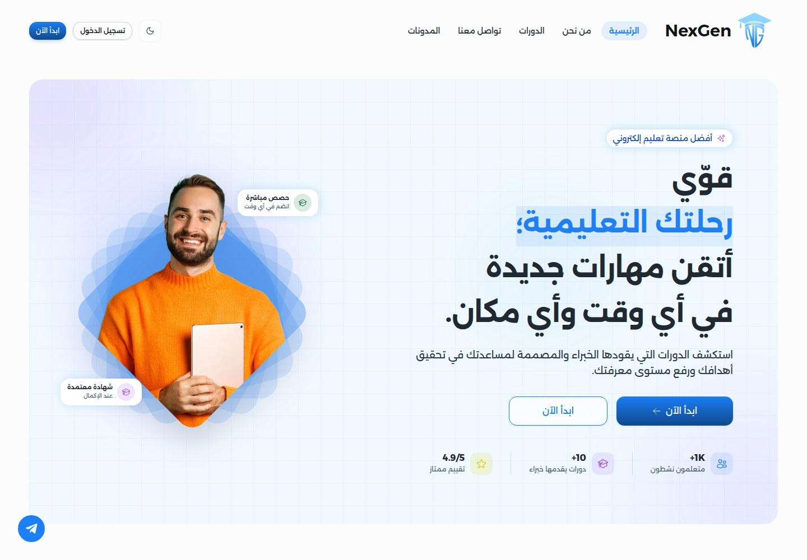
View case study ↗NexGen Academy
Learn markets. Build your next skill.
THE PROJECT INDEX · 22 PROJECTS
Browse a varied collection of digital experiences. Search by name, service, or category.

View case study ↗Learn markets. Build your next skill.
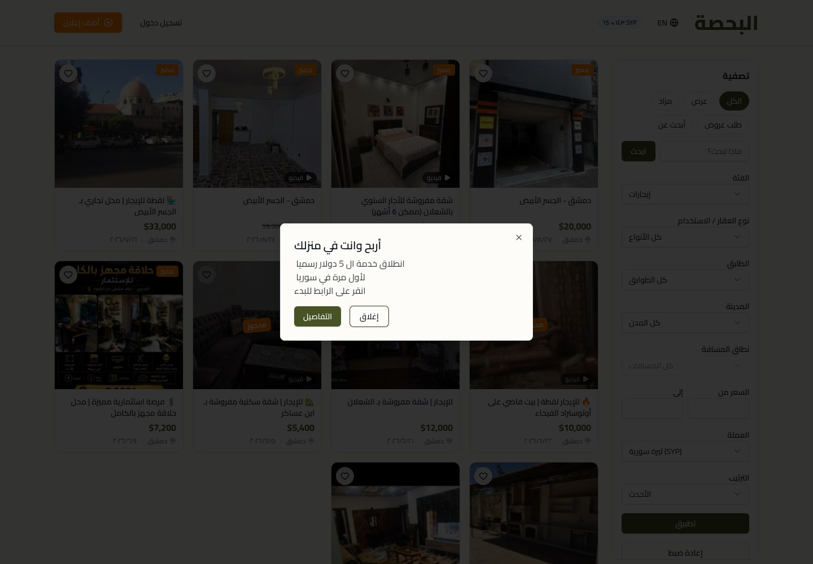
View case study ↗Discover and share what Syria has to offer.
 View case study ↗
View case study ↗Find the scent that speaks for you.
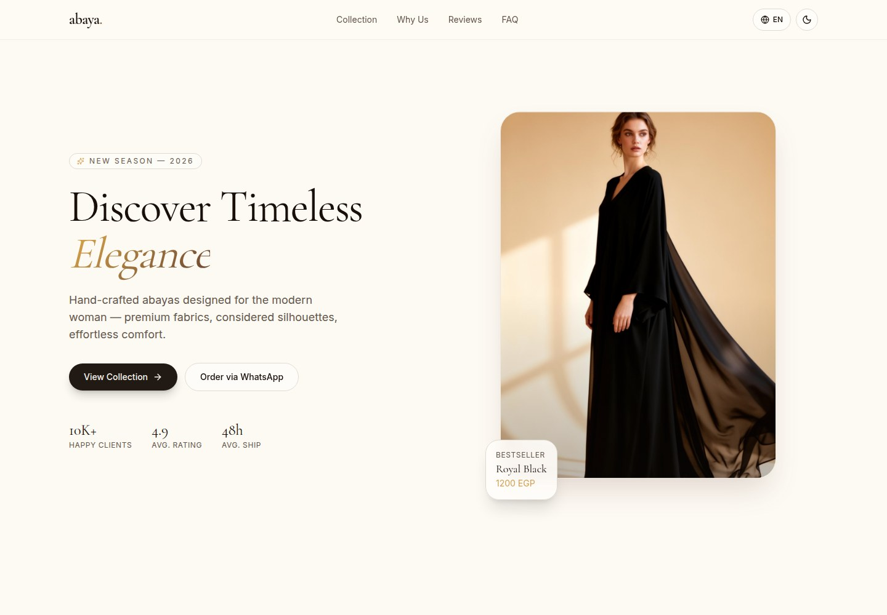
View case study ↗Elegance, made to move with you.
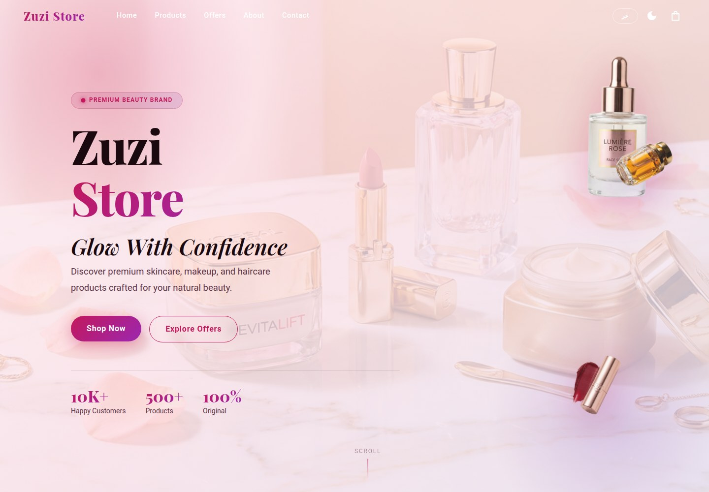
View case study ↗Your beauty essentials, softly in the spotlight.
 View case study ↗
View case study ↗Find your next drive.
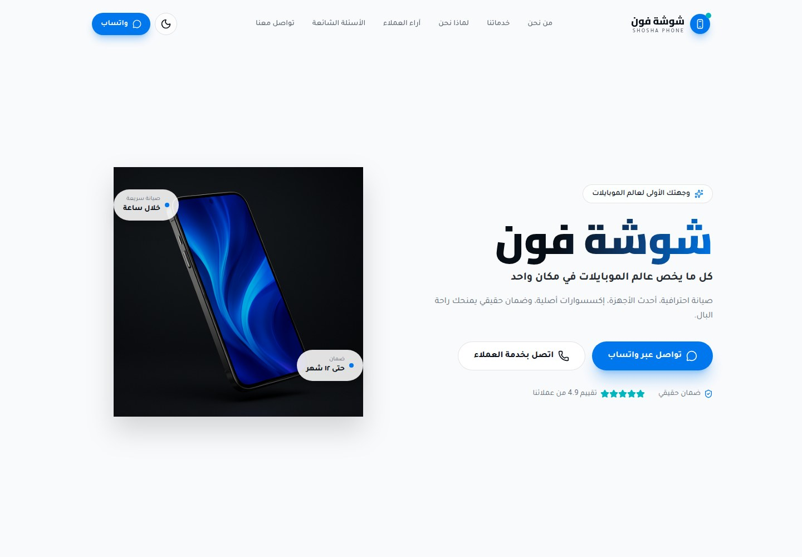
View case study ↗Your phone, cared for.
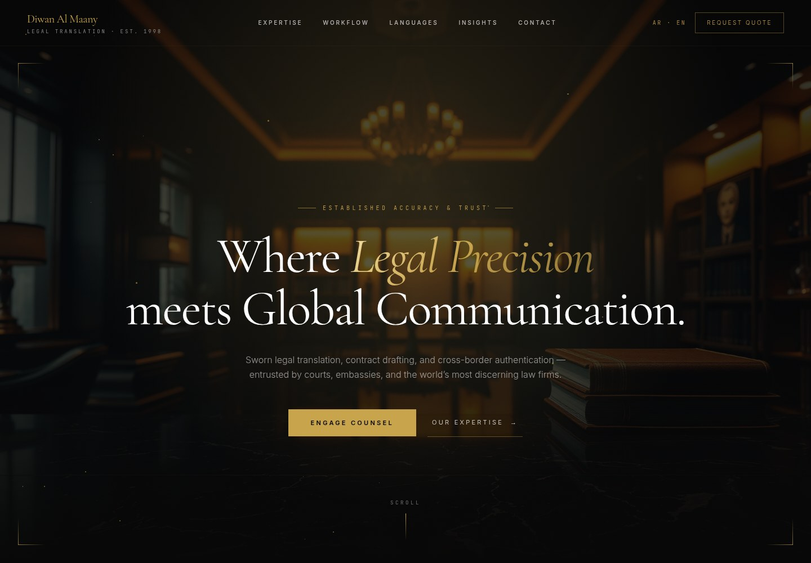
View case study ↗Legal meaning, carried across borders.
 View case study ↗
View case study ↗Plan with purpose. Build wealth with confidence.
 View case study ↗
View case study ↗Clarity and counsel for every legal step.
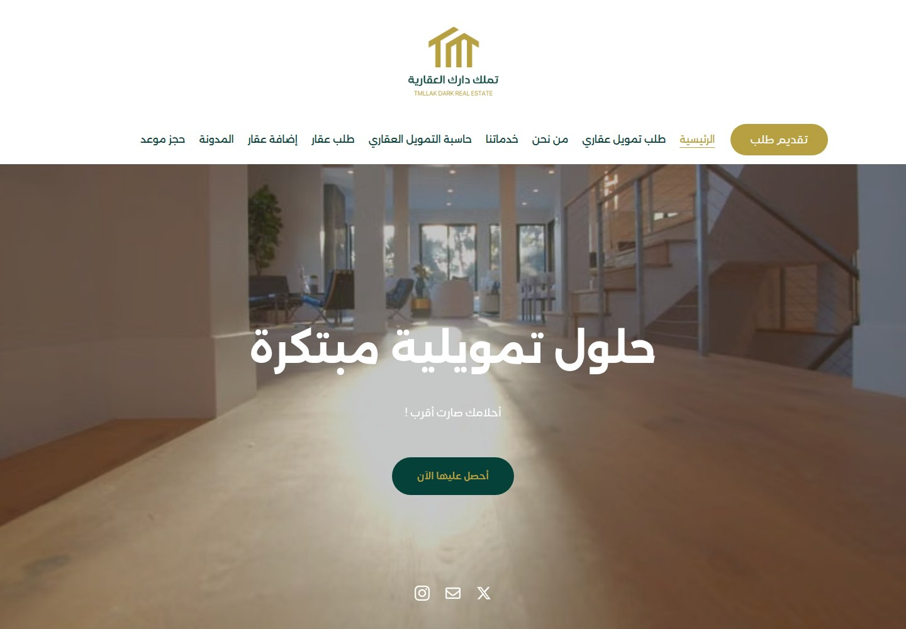
View case study ↗Make your homeownership dream closer.
 View case study ↗
View case study ↗A brighter path to your property goals.
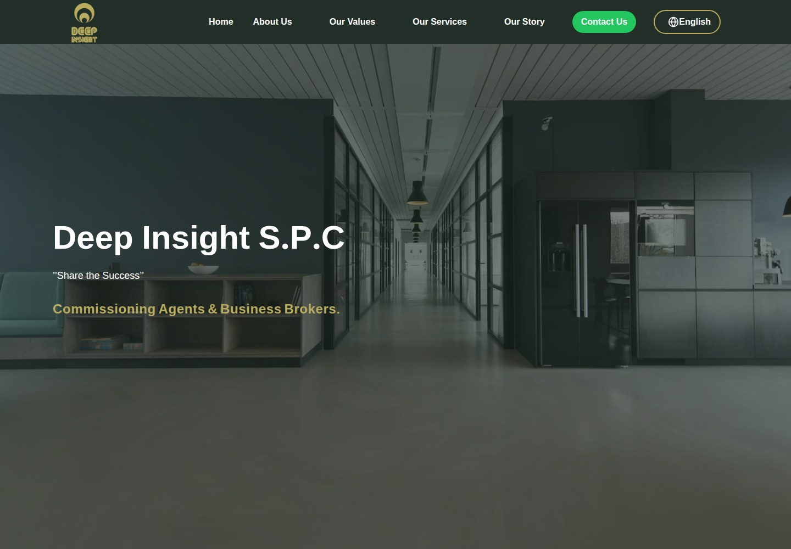
View case study ↗Insight for business growth.
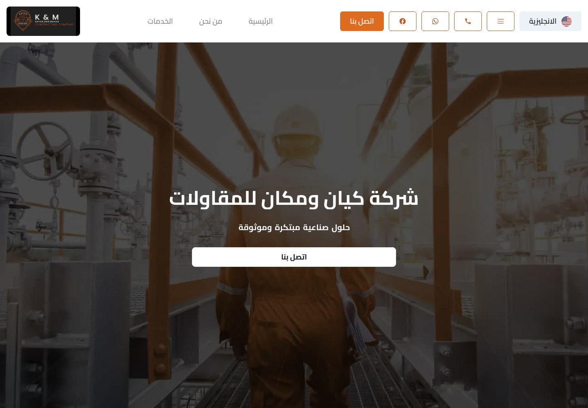
View case study ↗Industrial solutions, built around your needs.
 View case study ↗
View case study ↗Plan events from the first brief to the final moment.
 View case study ↗
View case study ↗Taxi rides across Kuwait, from everyday trips to VIP transport.
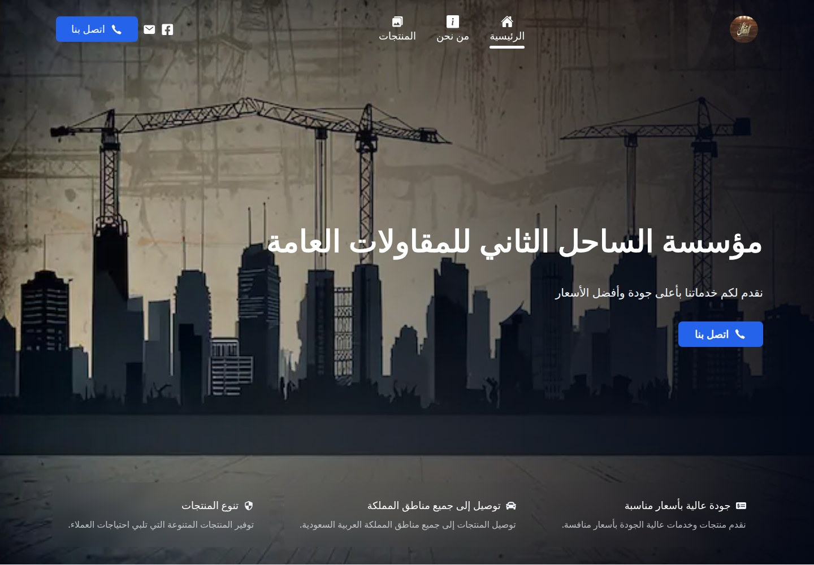
View case study ↗Building the essentials of urban infrastructure.
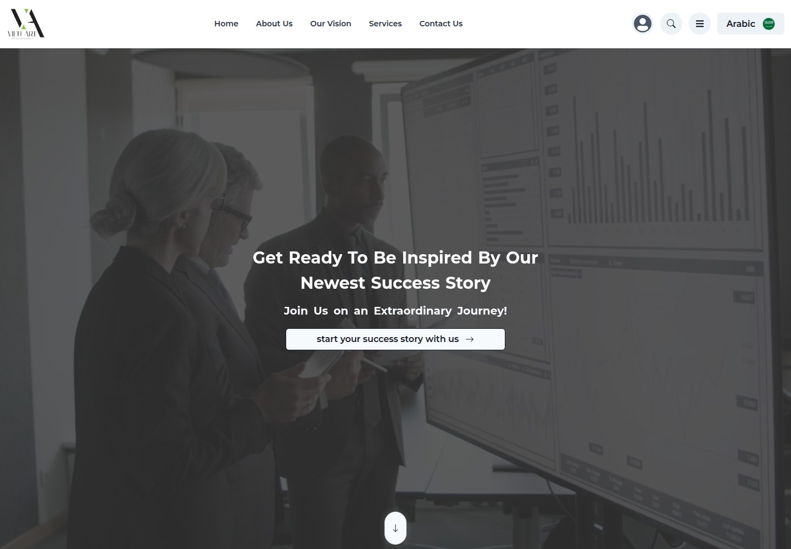
View case study ↗Ideas, shaped into striking experiences.
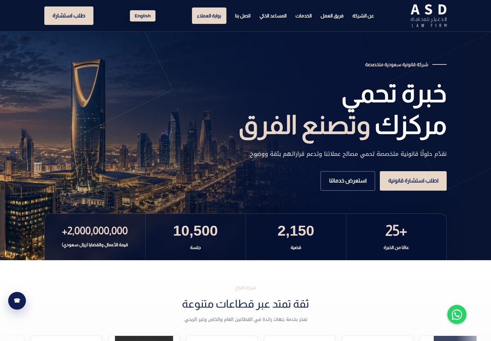
View case study ↗Legal clarity. Confident decisions.
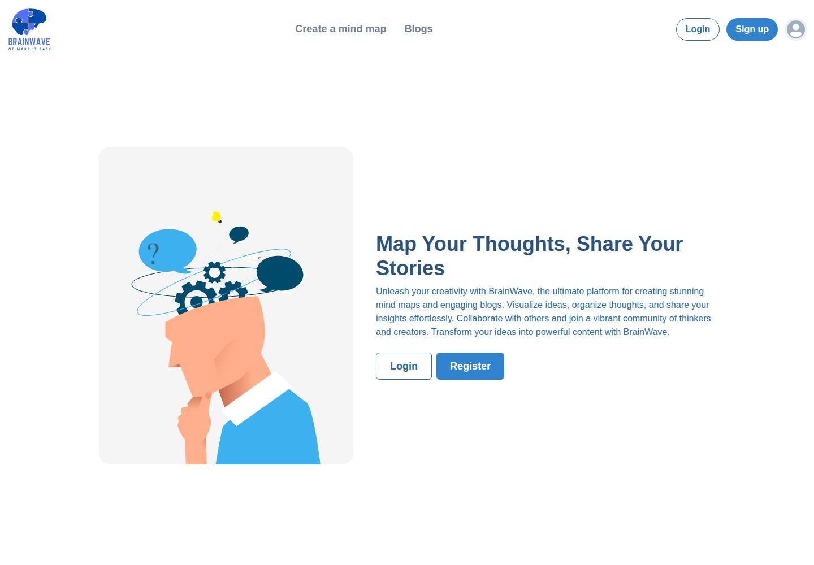
View case study ↗Map ideas. Share stories.
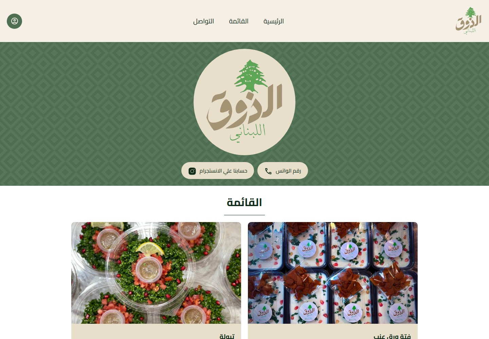
View case study ↗A taste of Lebanon, made to share.
 View case study ↗
View case study ↗Clinic operations and case review in one dental application.
No projects match that search.
Dhofar Sooq is omitted because the supplied website could not be reached and no service or screenshots could be verified.